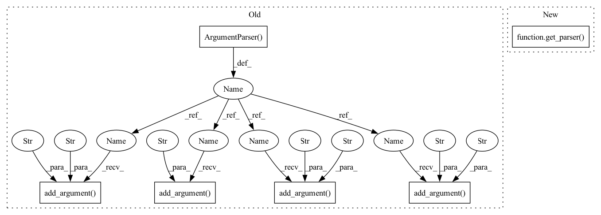

Pattern ID :24996

Before Change
def main():
parser = argparse.ArgumentParser(description="Command-line script for BLEU scoring.")
parser.add_argument("-s", "--sys", default="-", help="system output")
parser.add_argument("-r", "--ref", required=True, help="references")
parser.add_argument("-o", "--order", default=4, metavar="N",
type=int, help="consider ngrams up to this order")
parser.add_argument("--ignore-case", action="store_true",
help="case-insensitive scoring")
args = parser.parse_args()
print(args)
After Change
def main():
parser = get_parser()
args = parser.parse_args()
print(args)
assert args.sys == "-" or os.path.exists(args.sys), \
In pattern: SUPERPATTERN
Frequency: 3
Non-data size: 6
Instances
Fragment ID: 76844020
Project Name: kssteven418/i-bert
Commit Name: 6381cc977fa909bd53c8915a18684e49b3507332
Time: 2018-09-03
Author: myleott@fb.com
File Name: score.py
M Class Name: AnonimousClass
N Class Name: AnonimousClass
M Method Name: main(0)
N Method Name: main(0)
M Parent Class:
N Parent Class:
M File Name: score.py
N File Name: score.py
M Start Line: 19
M End Line: 25
N Start Line: 32
N End Line: 32
'>
Before Change
def main():
parser = argparse.ArgumentParser(description="Command-line script for BLEU scoring.")
parser.add_argument("-s", "--sys", default="-", help="system output")
parser.add_argument("-r", "--ref", required=True, help="references")
parser.add_argument("-o", "--order", default=4, metavar="N",
type=int, help="consider ngrams up to this order")
parser.add_argument("--ignore-case", action="store_true",
help="case-insensitive scoring")
args = parser.parse_args()
print(args)
After Change
def main():
parser = get_parser()
args = parser.parse_args()
print(args)
assert args.sys == "-" or os.path.exists(args.sys), \
'>
Fragment ID: 76844021
Project Name: neulab/retomaton
Commit Name: 6381cc977fa909bd53c8915a18684e49b3507332
Time: 2018-09-03
Author: myleott@fb.com
File Name: score.py
M Class Name: AnonimousClass
N Class Name: AnonimousClass
M Method Name: main(0)
N Method Name: main(0)
M Parent Class:
N Parent Class:
M File Name: score.py
N File Name: score.py
M Start Line: 19
M End Line: 25
N Start Line: 32
N End Line: 32
'>
Before Change
def main():
parser = argparse.ArgumentParser()
parser.add_argument("-i", "--input", required=True)
parser.add_argument("-p", "--phase", required=True)
parser.add_argument("-b", "--batch_size", default=8, type=int)
parser.add_argument("-n", "--n_iterations", default=int(1e5), type=int)
parser.add_argument("--cell_types", nargs="+", default=CELL_TYPES)
args = parser.parse_args()
phase = args.phase
if phase in ("c", "check"):
After Change
def main():
parser = get_parser(default_iterations=50000)
args = parser.parse_args()
if args.phase in ("c", "check"):
check_loader(args)
elif args.phase in ("t", "train"):
'>
Fragment ID: 76844022
Project Name: constantinpape/torch-em
Commit Name: 384eb548e1404d141ce9423116e29b6522e94fb1
Time: 2023-03-11
Author: constantin.pape@embl.de
File Name: experiments/probabilistic_domain_adaptation/livecell/unet_source.py
M Class Name: AnonimousClass
N Class Name: AnonimousClass
M Method Name: main(0)
N Method Name: main(0)
M Parent Class:
N Parent Class:
M File Name: experiments/probabilistic_domain_adaptation/livecell/unet_source.py
N File Name: experiments/probabilistic_domain_adaptation/livecell/unet_source.py
M Start Line: 60
M End Line: 73
N Start Line: 58
N End Line: 64